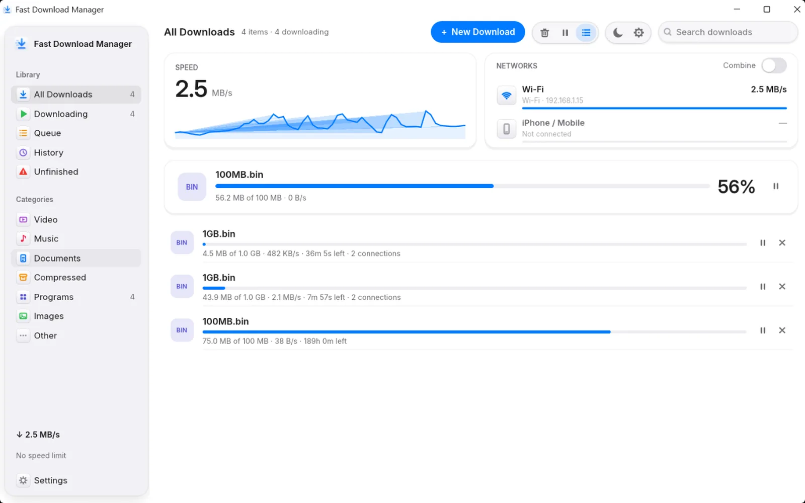
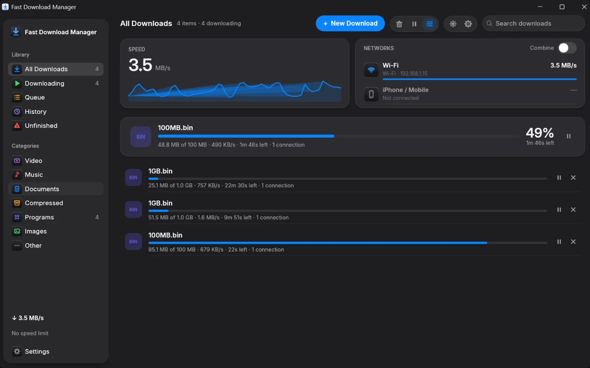
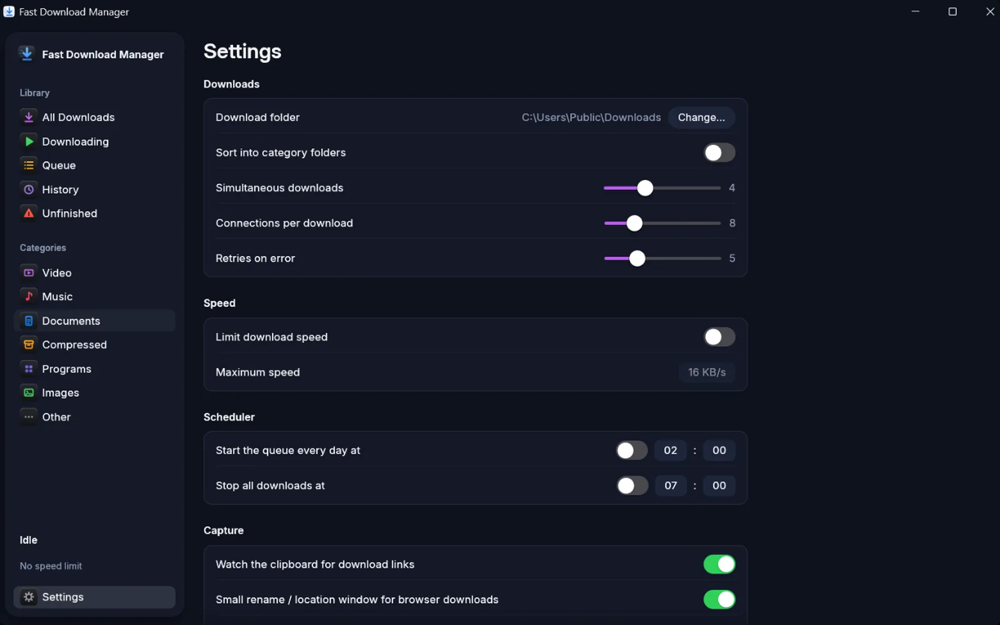

Split every file into pieces and download them at once, save videos and MP3s from YouTube and 1,000+ sites, combine Wi-Fi with a phone, and capture downloads from your browser. One small app that idles at about 1 MB.
Windows 10 and 11, 64-bit · 9.5 MB · Installs for your user, no admin rights

Every download with live speed and time left. Pause, resume and queue from one list.

Light, dark or follow Windows. Five dark styles and eight accent colors.

Settings that look like System Settings. Pick your connections, limits and look.
A quick, quiet download manager for Windows.
Many connections per file.
Fast Download Manager splits each file into up to 32 segments and keeps every connection busy until the end.
Light, dark and accent colors.
Follow Windows or choose your own. The pill toolbar matches the rest of the Gadgetcue apps.
Capture, limits and networks.
Choose what the browser captures, when downloads run and how fast, all from a settings page in the System Settings style.
Small, quiet and local.
Match Windows, or choose your own.
Download, install and you are done.
Fast-Download-Manager-Setup-0.3.0.exe and double-click it. It installs for your account only.Release notes for Fast Download Manager.
A big round of polish on the download manager: a new pill toolbar, dark styles and accent colors, a finished-download popup, a rename/location popup for browser downloads, and much lower idle memory.
Made by @gadgetcue · Telegram community · YouTube · Instagram
Windows 10 or 11, 64-bit. Nothing else has to be installed.
YouTube, Shorts, Instagram Reels, TikTok, Facebook, X, Reddit, Vimeo and more than 1,000 other sites. The app fetches yt-dlp and ffmpeg the first time you need them, so the first video takes a moment.
Not yet. Video-site downloads run over one connection. Normal file downloads are spread across every network you switch on.
The app must be installed and running (it can be hidden in the tray), and the extension must be loaded in the same computer's browser. After reloading the extension, reload the YouTube tab too.
The installer is not code-signed yet. Click More info, then Run anyway.
To update, run the new installer: it keeps your list and settings. To uninstall, use Settings > Apps > Installed apps in Windows.